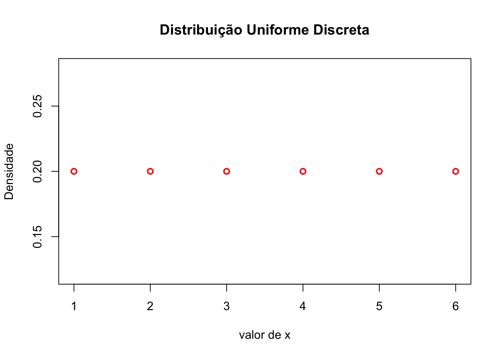
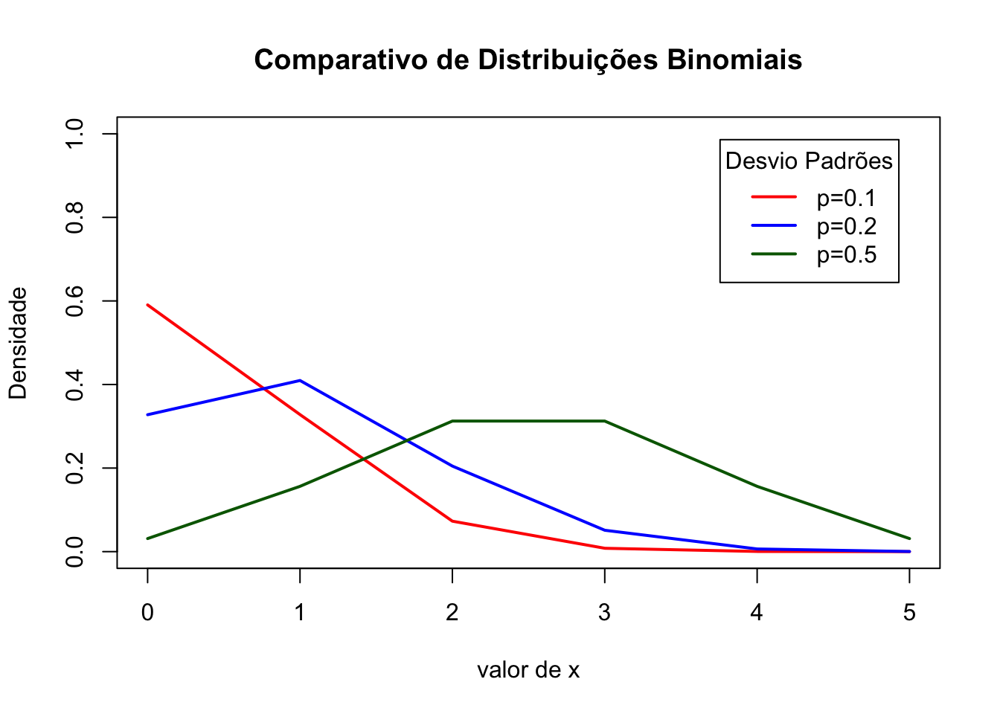
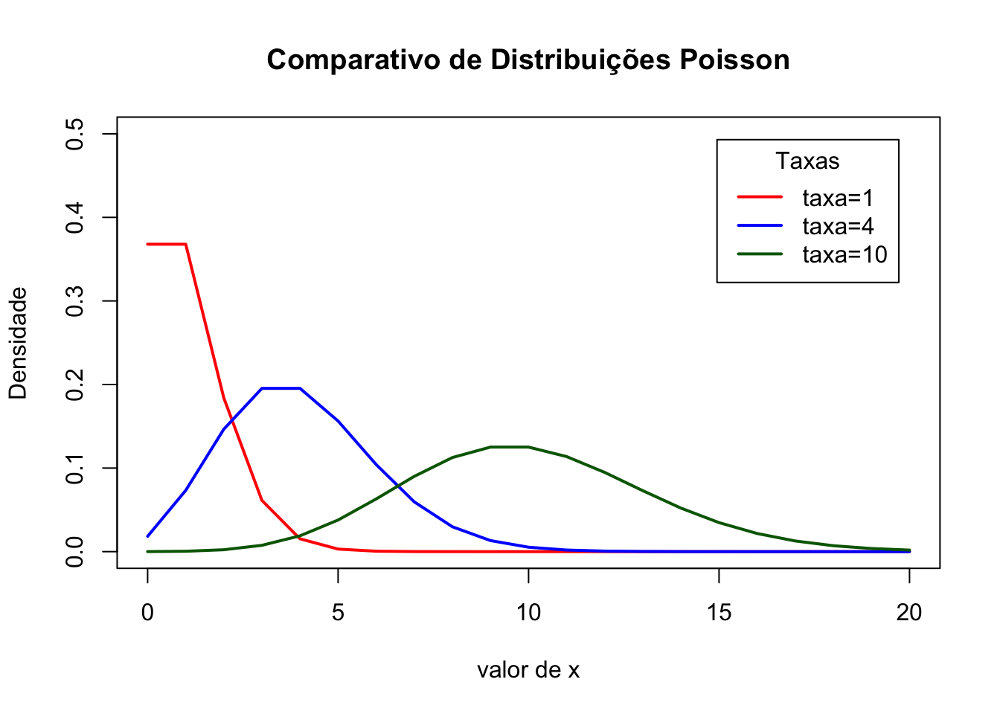
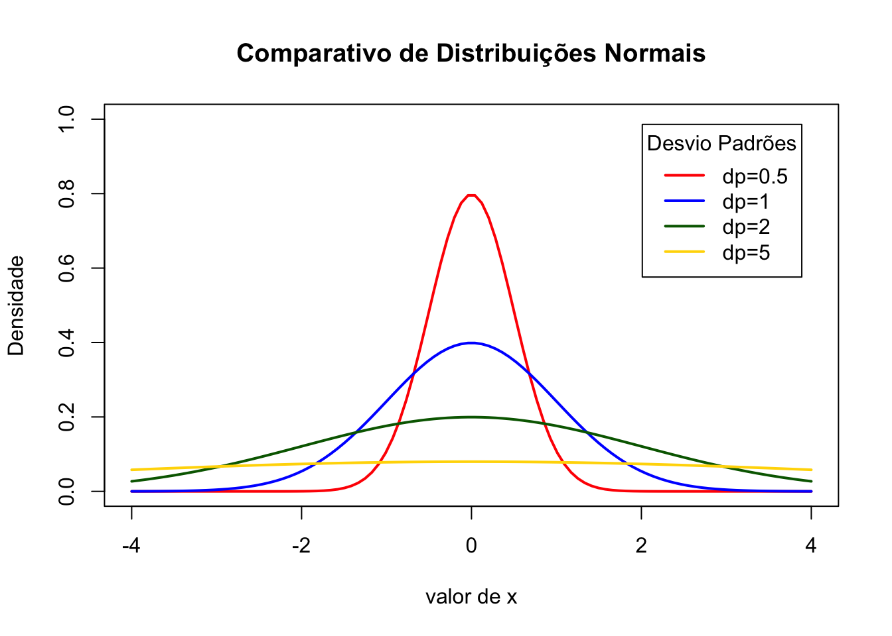
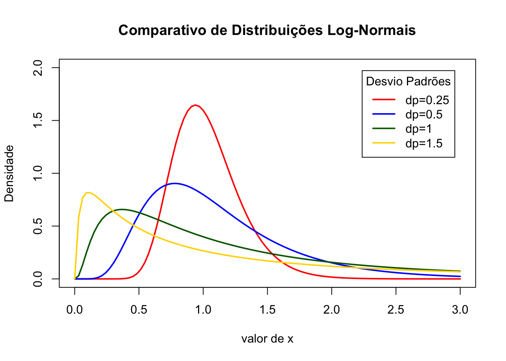
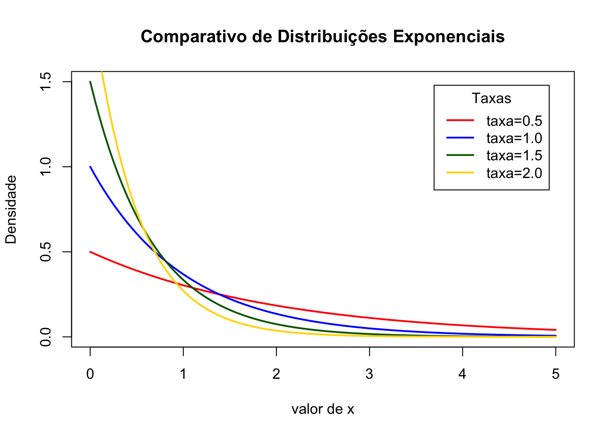
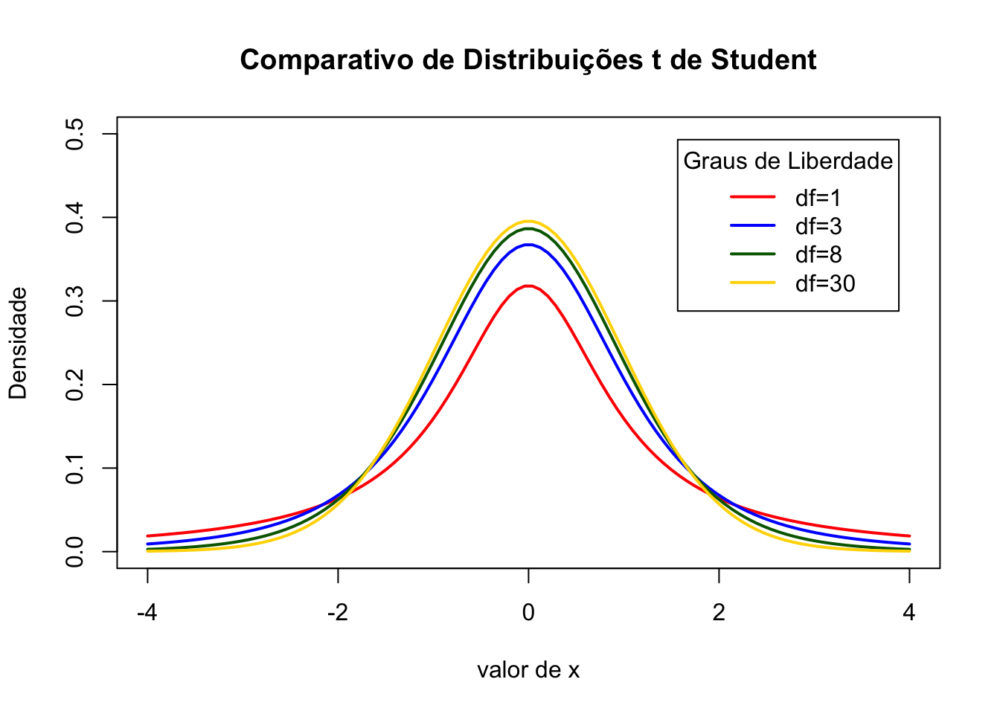

A estatística usa distribuições probabilísticas como o motor de sua inferência na elaboração dos valores dos parâmetros estimados e suas incertezas.
Uma distribuição de probabilidade é a função matemática que fornece as probabilidades de ocorrência de diferentes resultados possíveis para um experimento. É uma descrição matemática de um fenômeno aleatório em termos de seu espaço amostral e as probabilidades de eventos (subconjuntos do espaço amostral)
Geralmente usamos a notação X ~ Dist(par1, par2, ...). Onde X é a variável Dist é a distribuição e par os parâmetros que definem como a distribuição se comporta.
Distribuições de probabilidade discretas são aquelas que os resultados são números discretos (também chamados de números inteiros): \(\dots, -2, 1, 0,1,2,\dots, N\) e \(N \in \mathbb{Z}\).
A distribuição uniforme discreta é uma distribuição de probabilidade simétrica em que um número finito de valores são igualmente prováveis de serem observados. Cada um dos \(n\) valores tem probabilidade igual \(\frac{1}{n}\). Outra maneira de dizer “distribuição uniforme discreta” seria “um número conhecido e finito de resultados igualmente prováveis de acontecer”.
A distribuição uniforme discreta possui dois parâmetros e sua notação é \(U(a, b)\):
Exemplo: Um dado.
x <- seq(1, 6)
y <- dunif(x, min = 1, max = 6)
plot(x, y, xlab="valor de x",
ylab="Densidade",
main="Distribuição Uniforme Discreta",
lwd=2, col="red"
)
A distribuição binomial descreve um evento do número de sucessos em uma sequência de \(n\) experimentos independentes, cada um fazendo uma pergunta sim-não.
A distribuição binomial é freqüentemente usada para modelar o número de sucessos em uma amostra de tamanho \(n\) desenhada com substituição de uma população de tamanho \(N\).
A distribuição binomial possui dois parâmetros e sua notação é \(Bin(n, p)\):
Exemplo: quantidade de caras em 5 lançamentos de uma moeda.
x <- seq(0, 5)
probs <- c(0.1, 0.2, 0.5)
colors <- c("red", "blue", "darkgreen")
labels <- c("p=0.1", "p=0.2", "p=0.5")
plot(NA, xlab="valor de x",
ylab="Densidade",
main="Comparativo de Distribuições Binomiais",
xlim = c(0, 5),
ylim = c(0, 1))
for (i in 1:4){
lines(x, dbinom(x, 5, prob = probs[i]), lwd=2, col=colors[i])
}
legend("topright", inset=.05, title="Desvio Padrões",
labels, lwd=2, lty=c(1, 1, 1, 1, 2), col=colors)
A distribuição Poisson expressa a probabilidade de um determinado número de eventos ocorrerem em um intervalo fixo de tempo ou espaço se esses eventos ocorrerem com uma taxa média constante conhecida e independentemente do tempo desde o último evento. A distribuição de Poisson também pode ser usada para o número de eventos em outros intervalos especificados, como distância, área ou volume.
A distribuição Poisson possui um parâmetro e sua notação é \(pois(\lambda)\):
Exemplo: Quantidade de e-mails que você recebe diariamente. Quantidade de buracos que você encontra na rua.
x <- seq(0, 20)
rates <- c(1, 4, 10)
colors <- c("red", "blue", "darkgreen")
labels <- c("taxa=1", "taxa=4", "taxa=10")
plot(NA, xlab="valor de x",
ylab="Densidade",
main="Comparativo de Distribuições Poisson",
xlim = c(0, 20),
ylim = c(0, 0.5))
for (i in 1:4){
lines(x, dpois(x, lambda = rates[i]), lwd=2, col=colors[i])
}
legend("topright", inset=.05, title="Taxas",
labels, lwd=2, lty=c(1, 1, 1, 1, 2), col=colors)
Distribuições de probabilidade contínuas são aquelas que os resultados são valores em uma faixa contínua (também chamados de número reais): \([-\infty, \infty] \in \mathbb{R}\).
Essa distribuição geralmente é usada nas ciências sociais e naturais para representar variáveis contínuas na qual as suas distribuições não são conhecidas. Esse pressuposto é por conta do teorema do limite central. O teorema do limite central afirma que, em algumas condições, a média de muitas amostras (observações) de uma variável aleatória com média e variância finitas é ela própria uma variável aleatória cuja distribuição converge para uma distribuição normal à medida que o número de amostras aumenta. Portanto, as quantidades físicas que se espera sejam a soma de muitos processos independentes (como erros de medição) muitas vezes têm distribuições que são quase normais.
A distribuição normal possui dois parâmetros e sua notação é \(N(\mu, \sigma^2)\):
Exemplo: Altura, Peso etc.
x <- seq(-4, 4, length = 100)
dps <- c(0.5, 1, 2, 5)
colors <- c("red", "blue", "darkgreen", "gold")
labels <- c("dp=0.5", "dp=1", "dp=2", "dp=5")
plot(NA, xlab="valor de x",
ylab="Densidade",
main="Comparativo de Distribuições Normais",
xlim = c(-4, 4),
ylim = c(0, 1))
for (i in 1:4){
lines(x, dnorm(x, mean = 0, sd = dps[i]), lwd=2, col=colors[i])
}
legend("topright", inset=.05, title="Desvio Padrões",
labels, lwd=2, lty=c(1, 1, 1, 1, 2), col=colors)
A distribuição Log-normal é uma distribuição de probabilidade contínua de uma variável aleatória cujo logaritmo é normalmente distribuído. Assim, se a variável aleatória \(X\) for distribuída normalmente por log, então \(Y = \ln (X)\) terá uma distribuição normal.
Uma variável aleatória com distribuição logarítmica aceita apenas valores reais positivos. É um modelo conveniente e útil para medições em ciências exatas e de engenharia, bem como medicina, economia e outros campos, por ex. para energias, concentrações, comprimentos, retornos financeiros e outros valores.
Um processo log-normal é a realização estatística do produto multiplicativo de muitas variáveis aleatórias independentes, cada uma das quais positiva.
A distribuição log-normal possui dois parâmetros e sua notação é \(Lognormal(\mu, \sigma^2)\):
x <- seq(0, 3, length = 100)
dps <- c(0.25, 0.5, 1, 1.5)
colors <- c("red", "blue", "darkgreen", "gold")
labels <- c("dp=0.25", "dp=0.5", "dp=1", "dp=1.5")
plot(NA, xlab="valor de x",
ylab="Densidade",
main="Comparativo de Distribuições Log-Normais",
xlim = c(0, 3),
ylim = c(0, 2))
for (i in 1:4){
lines(x, dlnorm(x, mean = 0, sd = dps[i]), lwd=2, col=colors[i])
}
legend("topright", inset=.05, title="Desvio Padrões",
labels, lwd=2, lty=c(1, 1, 1, 1, 2), col=colors)
A distribuição exponencial é a distribuição de probabilidade do tempo entre eventos que ocorrem de forma contínua e independente a uma taxa média constante.
A distribuição exponencial possui um parâmetro e sua notação é \(Exp (\lambda)\):
Exemplo: Quanto tempo até o próximo terremoto. Quanto tempo até o próximo ônibus.
x <- seq(0, 5, length = 100)
rates <- c(0.5, 1, 1.5, 2)
colors <- c("red", "blue", "darkgreen", "gold")
labels <- c("taxa=0.5", "taxa=1.0", "taxa=1.5", "taxa=2.0")
plot(NA, xlab="valor de x",
ylab="Densidade",
main="Comparativo de Distribuições Exponenciais",
xlim = c(0, 5),
ylim = c(0, 1.5))
for (i in 1:4){
lines(x, dexp(x,rate = rates[i]), lwd=2, col=colors[i])
}
legend("topright", inset=.05, title="Taxas",
labels, lwd=2, lty=c(1, 1, 1, 1, 2), col=colors)
A distribuição t de Student surge ao estimar a média de uma população normalmente distribuída em situações onde o tamanho da amostra é pequeno e o desvio padrão da população é desconhecido.
Se tomarmos uma amostra de \(n\) observações de uma distribuição normal, então a distribuição t com \(\nu = n-1\) graus de liberdade pode ser definida como a distribuição da localização da média da amostra em relação à média verdadeira, dividida pela desvio padrão da amostra, após multiplicar pelo termo padronizador \(\sqrt{n}\).
A distribuição t é simétrica e em forma de sino, como a distribuição normal, mas tem caudas mais pesadas, o que significa que é mais propensa a produzir valores que estão longe de sua média.
A distribuição t de Student possui um parâmetro e sua notação é \(Student (\nu)\):
Exemplo: Uma base de dados cheia de outliers.
x <- seq(-4, 4, length = 100)
degfs <- c(1, 3, 8, 30)
colors <- c("red", "blue", "darkgreen", "gold")
labels <- c("df=1", "df=3", "df=8", "df=30")
plot(NA, xlab="valor de x",
ylab="Densidade",
main="Comparativo de Distribuições t de Student",
xlim = c(-4, 4),
ylim = c(0, 0.5))
for (i in 1:4){
lines(x, dt(x,df = degfs[i]), lwd=2, col=colors[i])
}
legend("topright", inset=.05, title="Graus de Liberdade",
labels, lwd=2, lty=c(1, 1, 1, 1, 2), col=colors)
Para acessar todo o zoológico de distribuições use essa ferramenta do Ben Lambert (estatístico do Imperial College of London): https://ben18785.shinyapps.io/distribution-zoo/
sessionInfo()## R version 4.0.3 (2020-10-10)
## Platform: x86_64-apple-darwin17.0 (64-bit)
## Running under: macOS Big Sur 10.16
##
## Matrix products: default
## LAPACK: /Library/Frameworks/R.framework/Versions/4.0/Resources/lib/libRlapack.dylib
##
## locale:
## [1] en_US.UTF-8/en_US.UTF-8/en_US.UTF-8/C/en_US.UTF-8/en_US.UTF-8
##
## attached base packages:
## [1] stats graphics grDevices utils datasets methods base
##
## other attached packages:
## [1] gapminder_0.3.0 skimr_2.1.2 rstanarm_2.21.1 Rcpp_1.0.5 readxl_1.3.1
##
## loaded via a namespace (and not attached):
## [1] nlme_3.1-150 matrixStats_0.57.0 xts_0.12.1 threejs_0.3.3 rstan_2.21.2 repr_1.1.0
## [7] tools_4.0.3 utf8_1.1.4 R6_2.5.0 DT_0.16 colorspace_2.0-0 withr_2.3.0
## [13] tidyselect_1.1.0 gridExtra_2.3 prettyunits_1.1.1 processx_3.4.5 curl_4.3 compiler_4.0.3
## [19] cli_2.2.0 shinyjs_2.0.0 colourpicker_1.1.0 scales_1.1.1 dygraphs_1.1.1.6 ggridges_0.5.2
## [25] callr_3.5.1 stringr_1.4.0 digest_0.6.27 StanHeaders_2.21.0-6 minqa_1.2.4 rmarkdown_2.5
## [31] base64enc_0.1-3 pkgconfig_2.0.3 htmltools_0.5.0 lme4_1.1-26 highr_0.8 fastmap_1.0.1
## [37] htmlwidgets_1.5.2 rlang_0.4.9 shiny_1.5.0 generics_0.1.0 zoo_1.8-8 jsonlite_1.7.1
## [43] crosstalk_1.1.0.1 gtools_3.8.2 dplyr_1.0.2 inline_0.3.17 magrittr_2.0.1 loo_2.3.1
## [49] bayesplot_1.7.2 Matrix_1.2-18 munsell_0.5.0 fansi_0.4.1 lifecycle_0.2.0 stringi_1.5.3
## [55] yaml_2.2.1 MASS_7.3-53 pkgbuild_1.1.0 plyr_1.8.6 grid_4.0.3 parallel_4.0.3
## [61] promises_1.1.1 crayon_1.3.4 miniUI_0.1.1.1 lattice_0.20-41 splines_4.0.3 knitr_1.30
## [67] ps_1.4.0 pillar_1.4.7 igraph_1.2.6 boot_1.3-25 markdown_1.1 shinystan_2.5.0
## [73] reshape2_1.4.4 codetools_0.2-18 stats4_4.0.3 rstantools_2.1.1 glue_1.4.2 evaluate_0.14
## [79] V8_3.4.0 RcppParallel_5.0.2 nloptr_1.2.2.2 vctrs_0.3.5 httpuv_1.5.4 cellranger_1.1.0
## [85] tidyr_1.1.2 gtable_0.3.0 purrr_0.3.4 assertthat_0.2.1 ggplot2_3.3.2 xfun_0.19
## [91] mime_0.9 xtable_1.8-4 later_1.1.0.1 survival_3.2-7 rsconnect_0.8.16 tibble_3.0.4
## [97] shinythemes_1.1.2 statmod_1.4.35 ellipsis_0.3.1